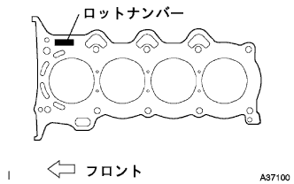
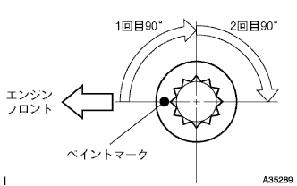
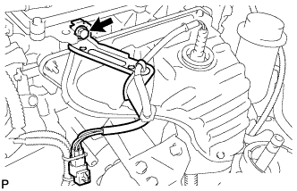
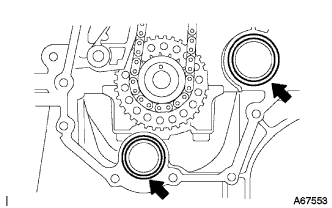
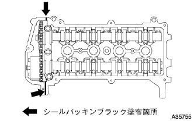
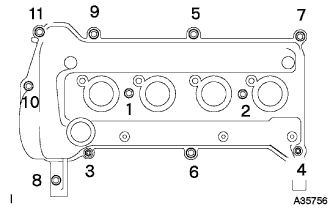
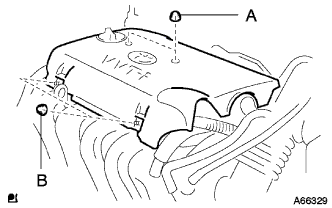

シリンダヘッド ガスケット（1NZ-FE(4WD)） 取り付け |
| 1. シリンダヘッドセット ボルト点検 |
 |
ノギスを使用して、ヘッドボルトの首下長さを点検する。
| 2. シリンダヘッド ガスケット取り付け |
|  |
ロットナンバーが上になるようにヘッドガスケットをシリンダブロックに取り付ける。
| 3. シリンダ ヘッドSUB-ASSY取り付け |
 |
シリンダヘッドボルトのねじ部と座面に少量のエンジンオイルを塗布する。
ダブルヘキサゴンレンチ8を使用して、図の順序でシリンダへッドボルトを数回に分けて仮締めした後、規定トルクで締め付ける。
|  |
シリンダへッドボルト頭部のエンジンフロント側にペイントマークをつける。
ペイントマークを目安にして、締め付け順序に従いシリンダへッドボルトを90°締め付ける。さらに、締め付け順序に従い90°増し締めする。
全てのペイントマークが180°締め付けられた位置にあることを確認する。
 |
シリンダへッドボルト締め付け後、図の箇所にシールパッキンブラック(直径4.5-5.5ｍｍ)を塗布する。
| 4. カムシャフト取り付け |
 |
カムシャフトカム部およびシリンダヘッドジャーナル部にエンジンオイルを塗布する。
カムシャフトタイミングギヤのタイミングマークを上側にして、カムシャフトおよびカムシャフトNo.2をシリンダヘッドにセットする。
カムシャフトベアリングキャップNo.2のフロントマークおよび数字を確認し、図の順序で数回に分けて均等に締め付ける。
カムシャフトベアリングキャップNo.1を取り付ける。
| 5. エンジン ワイヤ接続 |
エンジンワイヤを接続する。
| 6. ウォータバイパス パイプ NO.1取り付け |
新品のガスケットを介し、ボルト2本およびナット2個でウォータバイパスパイプNo.1を取り付ける。
| 7. ヒータウォータ ホース アウトレット A接続 |
クランプを取り付け、ヒータウォータアウトレットホースAを接続する。
| 8. ヒータウォータ ホース インレット A接続 |
クランプを取り付け、ヒータウォータインレットホースAを接続する。
| 9. フューエル チューブSUB-ASSY接続 |
フューエルチューブを接続する。
| 10. ウォータ フィラSUB-ASSY取り付け |
 |
ボルト2本で、ウォータフィラを取り付ける。
ラジエータホースNo.3およびラジエータリザーブタンクホースを接続する。
| 11. ラジエータ インレット ホース接続 |
ラジエータインレットホースを接続し、クランプを取り付ける。
| 12. ラジエータ アウトレットホース接続 |
ラジエータアウトレットホースを接続し、クランプを取り付ける。
| 13. ユニオン トゥー コネクタチューブ ホース接続 |
ユニオンツウコネクタチューブを接続する。
| 14. オイルレベルゲージ ガイド取り付け |
新品のOリングにエンジンオイルを塗布し、オイルレベルゲージガイドに取り付ける。
ボルトでオイルレベルゲージガイドを取り付ける。
オイルレベルゲージをオイルレベルゲージガイドに差し込む。
| 15. インテーク マニホルド取り付け |
 |
新品のガスケットをインテークマニホールドに取り付ける。
図の順序でインテークマニホルドを仮締めした後、規定トルクで締め付ける。
インテークマニホールドにワイヤハーネスを接続する。
ボルト2本で、ブレーキブースタ用バキュームチューブを取り付ける。
| 16. スロットル ボデーASSY取り付け |
新品のガスケットをインテークマニホールドに取り付ける。
ボルトおよびナット2個で、スロットルボデーASSYおよびアクセルレータコントロールケーブルブラケットを取り付ける。
スロットルポジションセンサおよびアイドルスピードコントロールバルブのコネクターを接続する。
| 17. ウォータバイパス ホース NO.2接続 |
ウォータバイパスホースNo.2を接続する。
| 18. ウォータバイパス ホース接続 |
ウォータバイパスホースを接続する。
| 19. アクセルレータ コントロールケーブルASSY接続 |
アクセルレータコントロールケーブルをスロットルボデーASSYに接続する。
| 20. マニホルドサポート ブラケット取り付け |
 |
ボルト3本で、マニホルドサポートブラケットを取り付ける。
| 21. オキシジエンセンサコネクター接続 |
|  |
コネクターを接続する。
ボルトでハーネスステーを取り付ける。
| 22. エキゾーストパイプASSY FR接続 |
ノギスを使用して、コンプレッションスプリングの自由長を測定する。
 |
新品のガスケットを木片およびハンマーを使用して、エキゾーストマニホルドの面一まで徐々に打ち込む。
ボルト2本で、エキゾーストマニホルドにエキゾーストパイプASSY FRを取り付ける。
| 23. チェーンSUB-ASSY取り付け |
図の位置のマークプレート(黄色)とタイミングマークを合わせて、チェーンを取り付ける。
マークプレートとタイミングマークがはずれないように、クランクシャフトタイミングスプロケット付近でチェーンをひもで縛る。
| 24. チェーン テンショナASSY NO.1取り付け |
 |
ロックが解除された状態でプランジャを奥まで押し込む。
 |
プランジャが奥まで押し込まれた状態からストッパプレートを下にさげ、プランジャをロックする。
 |
プランジャがロックされた状態からストッパプレートの穴にφ3mmの棒または六角棒レンチを差し込む。
ボルト2本でチェーンテンショナASSY No.1を取り付ける。
| 25. チェーンバイブレーション ダンパ NO.1取り付け |
ボルト2本でチェーンバイブレーションダンパNo.1を取り付ける。
| 26. チェーンテンショナ スリッパ取り付け |
ボルトでチェーンテンショナスリッパを取り付ける。
チェーンテンショナASSY No.1のストッパプレートから六角棒レンチを抜き取る。
ひもを取りはずす。
| 27. オイルポンプ シール取り付け |
 |
SSTを使用して、新品のオイルシールをオイルポンプの端面まで均等に打ち込む。
オイルシールのリップ部に少量のMPグリースNo.2を塗布する。
| 28. オイル ポンプASSY取り付け |
|  |
図の箇所に新品のOリングを取り付ける。
エンジン本体側およびオイルポンプにシールパッキンを塗布する。

 |
オイルポンプのドライブロータスプライン部をクランクシャフトの2面幅部に合わせ、オイルポンプASSYをクランクシャフトに挿入する。
 |
ボルト15本およびナットで、オイルポンプASSYを取り付ける。
| 29. エンジンウォータポンプASSY取り付け |
 |
新品のガスケットを介して、ボルト3本およびナット2個でウォータポンプを取り付ける。
| 30. ウォータポンプ プーリ取り付け |
 |
SSTを使用して、ウォータポンププーリを固定する。
ボルト3本を締め付ける。
| 31. エンジンマウンティング ブラケット RH取り付け |
 |
ジャッキを操作して、エンジンマウンティングブラケットRHが取り付けられる位置にする。
ボルト4本で、エンジンマウンティングブラケットRHを取り付ける。
| 32. エンジンマウンティング インシュレータSUB-ASSY RH取り付け |
 |
ジャッキを操作して、ボルト5本およびナットで、エンジンマウンティングインシュレータRHを取り付ける。
| 33. カムシャフトタイミングオイルコントロール バルブASSY取り付け |
ボルトで、カムシャフトタイミングオイルコントロールバルブを取り付ける。
| 34. クランクポジション センサ取り付け |
 |
Oリングに少量のエンジンオイルを塗布する。
ボルトでクランクポジションセンサを取り付ける。
コネクターを接続する。
| 35. クランクシャフト ダンパSUB-ASSY取り付け |
 |
クランクシャフトダンパのストレートピン穴とクランクシャフトストレートピンを合わせ、クランクシャフトダンパを取り付ける。
SSTを使用してクランクシャフトダンパを固定し、ボルトを締め付ける。
| 36. シリンダヘッド カバーSUB-ASSY取り付け |
|  |
図の位置にシールパッキンブラックを塗布し、シリンダヘッドカバーを取り付ける。
|  |
ボルト9本およびナット2個で、シリンダヘッドカバーを取り付ける。
図の順序で数回に分けてボルトおよびナットを締め付ける。
| 37. エア クリーナASSY取り付け |
ボルト4本でエアクリーナケースとエアクリーナインレットNo.1を取り付ける。
エアクリーナフィルタエレメントを取り付ける。
エアクリーナキャップとエアクリーナホースASSYを取り付ける。
| 38. ベンチレーション ホース NO.2取り付け |
ベンチレーションホースNo.2を取り付ける。
| 39. ベンチレーション ホース取り付け |
ベンチレーションホースを取り付ける。
| 40. イグニッション コイル NO.1取り付け |
ボルトで各イグニッションコイルNo.1を取り付ける。
| 41. シリンダヘッド カバー NO.2取り付け |
|  |
ナットA2個を締め付け後、ナットB2個でシリンダヘッドカバーNo.2を取り付ける。
| 42. オルタネータASSY取り付け |
 |
ボルトBでオルタネータを仮付けする。
 |
ボルトAおよびナットでファンベルトアジャスティングバーを仮付け後、オルタネータをシリンダブロック側に寄せてナットを本締めする。
ワイヤハーネスクランプを取り付ける。
コネクターを接続する。
ナットで+B端子を取り付ける。
ターミナルキャップを取り付ける。
| 43. ベーンポンプVベルト(パワステベルト)取り付け |
Vベルトを各プーリに仮付けする。
| 44. ベーンポンプVベルト(パワステベルト)調整 |
 |
Vベルトの張力を調整し、調整用ボルトBを締付ける。
固定用ボルトAを締付ける。
| 45. ファン ＆ オルタネータ Vベルト取り付け |
Vベルトを各プーリに仮付けする。
| 46. ファン ＆ オルタネータ Vベルト調整 |
 |
ハブナットレンチまたはバーなどを使用して、オルタネータを車両フロント側に押して、ファン & オルタネータVベルトの張力を調整する。
 |
調整用ボルトAを締め付けてから、固定用ボルトBを締め付ける。
| 47. Vベルト張力·たわみ量点検 |
 |
張力およびたわみ量点検
| 新品取り付け時 [mm] | 点検時 [mm] | |
|---|---|---|
| オルタネータベルト | 7-8.5 | 11-13 |
| P/Sベルト | 8-10 | 11-13 |
| 新品取り付け時 [N{kgf}] | 点検時 [N{kgf}] | |
|---|---|---|
| オルタネータベルト | 539-637 {55-65} | 245-392 {25-40} |
| P/Sベルト | 441-539 {45-55} | 245-343 {25-35} |
| 48. フロントタイヤRH取り付け |
| 49. バッテリマイナスターミナル接続 |
| 50. エンジンオイル補充 |
| 51. 冷却液(トヨタ純正スーパーLLC)補充 |
ラジエータドレーンコツクプラグを閉じて、冷却水をラジエータ注入口よりあふれるまで注入する。[*1]
ラジエータキャップを締める。
ラジエータリザーブタンクに冷却液を上限まで注入する。
エンジンをサーモスタットが開弁するまで暖機する。
エンジンを止め、冷却液が冷えるまで待ち、ラジエータキャップをはずして水位を確認する。
水位が下がっている場合は、[*1]より繰り返す。
水位が下がらなくなったら、ラジエータリザーバタンクの冷却液を調整する。
| 52. エンジンオイル漏れ点検 |
| 53. 燃料漏れ点検 |
燃圧のかかった状態で燃料系統に漏れがないことを確認する。
| 54. 冷却液(トヨタ純正スーパーLLC)漏れ点検 |
冷却液を満水にしてテスターを取り付ける。
137kPa{1.4kgf/cm2}の圧力をかけ、各部に水漏れがないことを確認する。
| 55. エンジンアンダ カバー RH取り付け |
スクリュー2個およびボルト2本で、エンジンアンダカバーRHを取り付ける。
ナットを、締め付ける。
| 56. バッテリターミナル脱着時の初期化 |
参照